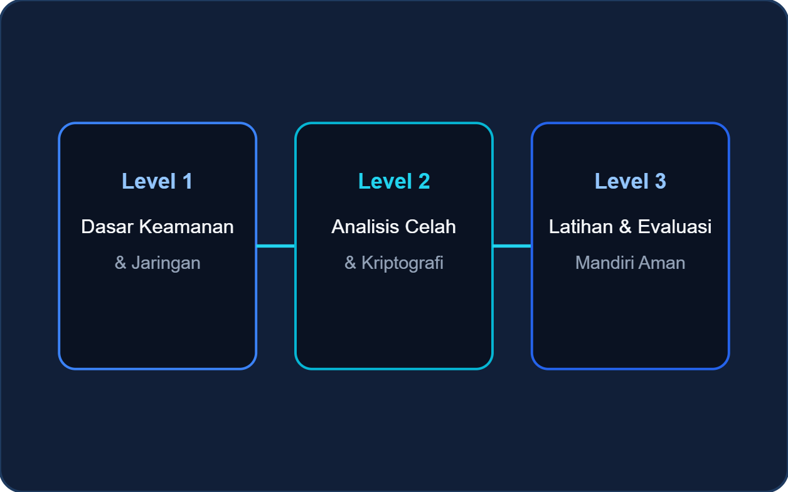

Siapa Kami & Tujuan Platform
Banyak pembelajar baru merasa kewalahan karena materi keamanan siber sering terpecah antara teori abstrak dan istilah teknis yang kurang dijelaskan konteksnya. Rafly Cyber Academy menjembatani hal tersebut dengan alur belajar bertahap, contoh yang aman, dan kuis evaluasi mandiri.
Tujuan utama platform ini adalah membantu peserta membangun pola pikir keamanan (*security mindset*), mengenali kerentanan umum sejak tahap perancangan, serta menerapkan praktik pertahanan dasar yang tepat.

Mewujudkan Pembelajar Siber yang Kompeten dan Etis
Menjadi sumber belajar keamanan siber tingkat awal hingga menengah yang mudah diakses, jelas secara teknis, dan menjunjung tinggi etika penggunaan pengetahuan keamanan.
Menyajikan Materi & Latihan Berbasis Pemahaman
Menyusun jalur belajar dan katalog kursus terfilter, menjelaskan celah keamanan beserta mitigasinya, serta menyediakan latihan kuis interaktif yang berjalan aman di browser.
Untuk Siapa Platform Ini Dibuat?
Mahasiswa & Pelajar TI
Memperkuat pemahaman dasar jaringan, sistem operasi Linux, kriptografi, dan keamanan web sebagai pelengkap studi akademik.
Junior Developer
Memahami cara mencegah kerentanan umum seperti SQL Injection, XSS, dan pengelolaan kredensial yang kurang aman saat menulis kode.
Pembelajar Mandiri
Memulai perjalanan keamanan siber dari nol dengan peta jalan yang jelas dan kuis untuk menguji pemahaman tiap topik.
Pendekatan yang Fokus pada Kualitas Pemahaman
Fokus Pertahanan & Mitigasi
Setiap pembahasan kerentanan selalu disertai penjelasan akar masalah dan langkah perbaikan praktis, bukan sekadar daftar istilah.
Evaluasi Langsung & Terukur
Dilengkapi halaman Practice Lab untuk menguji pemahaman berdasarkan tingkat kesulitan dan menampilkan penjelasan setiap jawaban.